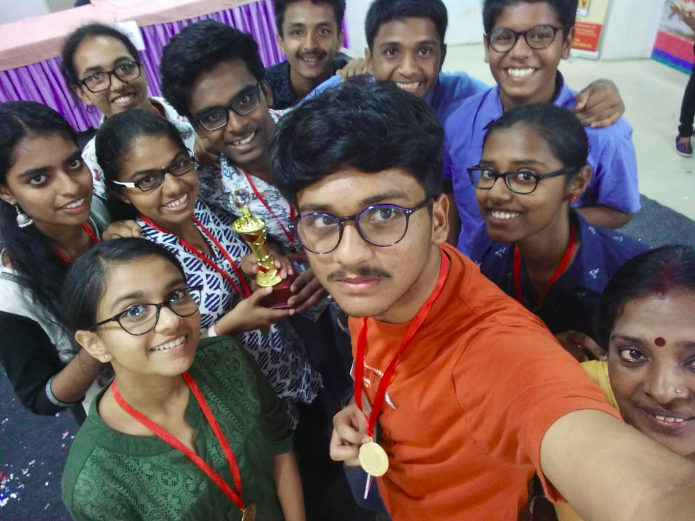
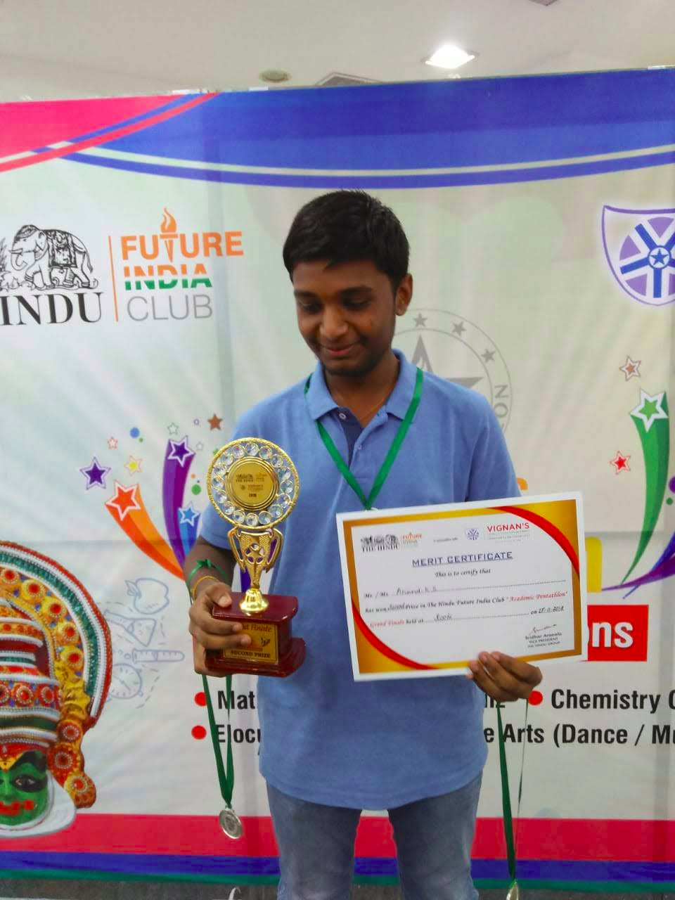

Keep away from those who try to belittle your ambitions. Small people always do that, but the really great make you believe that you too can become great
Overview
This page or blog of mine contains descriptions about small adventures(2 of the many) I have had. This page may be subjected to a little bit of self-appreciation and boasting.
But hey!! Chill, Thats a part of our game!
Pentathalon
Garde 12 was about to come to an end and with it my life at school. November is literally not the time for a grade 12 boy to have fun.The Hindu thhought otherwise
The Hindu organised its very first academic pentathalon in 2019. Academic pentathalon was a culmination of events in 5 areas namely literature, fine arts(dance/music),mathematics ,physics and chemistry.Best part of it, it was only for grade 11 and 12. And that gave 10 of us from grade 12 to escape from ther usual boredom of classses, that too in a mall
And thus, we boarded a mini-man from our school and set off to Oberon mall at 7am in the morning. Why we went at 7am is still a confusing question. We reached the place and found that the mall was never open. But that was a very positive thing to happen as it gave us a breakfast entirely funded by the school.(Cool!!aint it?)
The teams from various schools started arriving by 9:30. Our registration was completed by 10am and we were seated in a waiting area while all other teams registered.Our tasks for PCM was a quiz and we completed the first round with ease and were way too sure that we would qualify for the six-team final.
Completion of the prelims meant that we had some time to ourselves in a mall. We ran through almost all shops. The men seem to be interested in gadgets while the ladies were busy trying out clothes. But we were too careful and made sure that if we are spending money,then it was only at the food court. Indeed, we did spend a lot in the food court.
And then after a sumptuous lunch put up by the organisers, we went to the main hall where they were to announce the top 6 teams who qulaifid to the finals. With no surprise(but we acted as if we were way too surprised), we qualified for the district finals which we then went onto win! It was a very good experience at the district level and yaay we qualified for the state level competition,which meant one more fun day at the mall
The morning of the state finals came.We were not in the mood for a pleasure trip like it was for the district level. There was a part of us that wanted to win it.So we boarded the mini -van, this time late enough.We reached the venue and found that the top 2 teams from other districts were already there. And then we went through our usual routine of registrations.Our first round of quiz was hard burt we knew that even if we fail, our literature team and fine arts team would gather points to get us to the finals.
Luckily enough we qualified for the finals. After a fun round at the food court we went onto stage to attend our finals .We missed our first by a narrow gap of 9.5 points and had to contend with a second spot. We were sad to lose at such a close margin but were contended with what we have. We celebrated with our teacher at the mall but she quickly got us all back home,since we had our model-examinations the very next day.
INFINITUM 2K17
Infinitum 2k17 was one of the best competitions I have had in my life so far. It was a logical and puzzle quiz conducted by club mathematica of NIT Calicut. It is more of a fun ride than a competition
The first level of infinitum was a school level round, wherein the organisers come to your school and conduct a 30minute written round with 15qns which were tricky to the core. From our school,a team comprising of me and my partner Hariganesh and a team consisting of two of my classmates(Megha and Anagha) qualified for the district finals
The finals were to be held at Assissi Vidyanikethan,Kakkanad.We reached the place 20min before the event and registered. The first round was one of the funniest and most enjoyable ones I ever had. The first round started with a few brain teasers after which the competition turned to a lot of tasks. Thwe tasks included building things with matchsticks, creating patterns with coins,and jigsaw-like-puzzles.
After the first round, we went onto grab our lunch from the school canteen being unaware whether we will qualify for the finals or not. We met a lot of friends from other schools and made many too.
And the results came and we qualified for the finals. The first round in finals was a video round wherein you would be shown epic movie scenes and questions would be asked on your observation. We actually killed it in that round. The 2nd round was a great one. Each team was given 2 qns which they can ask to anyother team.If they fail to answer we get somepoints , else we score negative. That was a fun round where we lost pounts in a question while we gained points in the other. The last round was a rapid fire, which we presumably did well.
We went on to win third prize and some bucks into our pockets but missed the national finals at Calicut by 5 points.